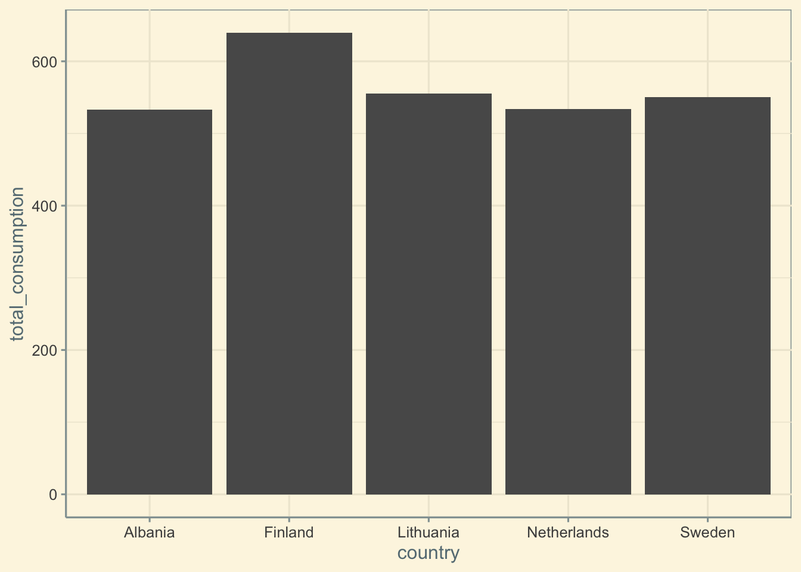

7 Exam 2
- this is a continuation of exam one
7.1 Research question:
What does the consumption of each food category in each country look like?
7.2 Import Necessary Data and Tools:
Load in packages:
Load data:
Inspect Data:
spc_tbl_ [1,430 × 4] (S3: spec_tbl_df/tbl_df/tbl/data.frame)
$ country : chr [1:1430] "Argentina" "Argentina" "Argentina" "Argentina" ...
$ food_category: chr [1:1430] "Pork" "Poultry" "Beef" "Lamb & Goat" ...
$ consumption : num [1:1430] 10.51 38.66 55.48 1.56 4.36 ...
$ co2_emmission: num [1:1430] 37.2 41.53 1712 54.63 6.96 ...
- attr(*, "spec")=
.. cols(
.. country = col_character(),
.. food_category = col_character(),
.. consumption = col_double(),
.. co2_emmission = col_double()
.. )
- attr(*, "problems")=<externalptr> # A tibble: 22 × 4
country food_category consumption co2_emmission
<chr> <chr> <dbl> <dbl>
1 Argentina Pork 10.5 37.2
2 Argentina Poultry 38.7 41.5
3 Argentina Beef 55.5 1712
4 Argentina Lamb & Goat 1.56 54.6
5 Argentina Fish 4.36 6.96
6 Argentina Eggs 11.4 10.5
7 Argentina Milk - inc. cheese 195. 278.
8 Argentina Wheat and Wheat Products 103. 19.7
9 Argentina Rice 8.77 11.2
10 Argentina Soybeans 0 0
# ℹ 12 more rowsInspect Country Variable:
tibble [130 × 2] (S3: tbl_df/tbl/data.frame)
$ country : chr [1:130] "Albania" "Algeria" "Angola" "Argentina" ...
$ sum(consumption): num [1:130] 533 365 116 429 407 ...There are 130 observations, when you set the unit of observation to countries, so there are 130 countries in this dataset
Inspect food_category variable:
# A tibble: 11 × 1
food_category
<chr>
1 Pork
2 Poultry
3 Beef
4 Lamb & Goat
5 Fish
6 Eggs
7 Milk - inc. cheese
8 Wheat and Wheat Products
9 Rice
10 Soybeans
11 Nuts inc. Peanut Butter Here we have 11 distinct food categories, but it is better to rename them for the sake of making them easier to read in a viz
Clean data:
Double checking to make sure all variables are properly renamed
7.3 Sub-research Question 1: Which 5 countries consume the most food?
Expected Dataframe: We want a dataframe in which countries are listed, followed by their total consumption
Reshaping / Wrangling data:
Visualizing Data:
Code
country_consumption |>
arrange(desc(total_consumption)) |>
head(5) |>
ggplot(aes(x = country, y = total_consumption, fill = country)) +
geom_col() +
theme_solarized() +
scale_fill_solarized() +
labs(x = "Country", y = "Total Consumption", title = "World's Largest Consumers") +
theme(plot.title = element_text(size = 25, family = "serif", face = "bold", color = "#586e75", hjust = 0.5),
axis.title = element_text(size = 15, family = "serif", face = "bold", color = "#586e75"),
axis.text = element_text(size = 10, family = "mono", color = "#586e75"),
legend.position = "none")
Observations: Seemingly, the top consumers of food are exclusively European countries. Their geographic location varies from Eastern to Western, Baltics and Balkans and Scandinavian countries. They all consume roughly similar amounts of food, with Findland consuming the most.
7.4 Sub-research Question 2: Which 5 countries consume the most of each food?
Expected Dataframe: We want a dataframe where there is a variable for countries, a variable for the food type, and a variable for the consumption value. The food_category should correspond to the top 5 highest values in the consumption variable for its category. And the countries in the country variable will be the top 5 consumers of whatever food category is in the food variable.
Reshaping / Wrangling Data:
Vizualizing Data:
Code
ggplot(top_food_consumers, aes(x = food_category, y = consumption, fill = country)) +
geom_col() +
theme_solarized() +
theme(axis.text.x = element_text(angle = 45, hjust = 1, size = 10, family = "mono", color = "#586e75"),
axis.text.y = element_text(size = 10, family = "mono", color = "#586e75"),
axis.title = element_text(size = 14, family = "serif", face = "bold"),
legend.text = element_text(size = 10, family = "mono", color = "#586e75"),
legend.title = element_text(size = 14, family = "serif", face = "bold"),
plot.title = element_text(size = 18, family = "serif", face = "bold", color = "#586e75")) +
labs(fill = "Country", x = "Food Category", y = "Consumption", title = "Largest Consumers by Food Category")![A bar graph with an x-axis label 'Food Category' and y-axis label 'Consumption' is displayed. The range goes above 1500 on the y-axis. 11 bars represent 11 food categories on the x-axis, which is labeled with each food category. The bars are colored, and a legend on the right is titled 'Country' and lists the colors and their corresponding country. The title of the plot is 'Largest Consumers by Food Category'. The bar with the highest consumption is dairy, whose consumers all color enough of the bar to make their consumption several times larger than that of the soybean bar. The second and third tallest bars are wheat and rice respectively, followed by fish, poultry, pork, and beef.](exam_2_files/figure-html/unnamed-chunk-12-1.png)
Observations: Of all categories, dairy, wheat, and rice are the most consumed. The consumption of dairy, wheat, or rice is enough to outmatch the entire consumption of the top 5 countries combined in some categories like nuts or soybeans. What this means is that some of these categories are relatively easy to be a top 5 country in, because their consumption is very low anyway.
7.5 Sub-research Question 1: What does the consumption of each food look like?
Expected Dataframe: We want a dataframe in which there is a country variable, a variable for food type, a corresponding variable for consumption, and a variable for the geometry of each country.
Reshaping, Wrangling, and importing data:
Find out which countries don’t have a match in the geometry dataset
# A tibble: 17 × 1
country
<chr>
1 USA
2 Bermuda
3 Hong Kong SAR. China
4 French Polynesia
5 Bahamas
6 Malta
7 Barbados
8 Czech Republic
9 Maldives
10 Serbia
11 Swaziland
12 Macedonia
13 Mauritius
14 Grenada
15 Taiwan. ROC
16 Tanzania
17 Congo Code
admin
1 United Republic of Tanzania
2 Western Sahara
3 United States of America
4 Uzbekistan
5 Papua New Guinea
6 Democratic Republic of the Congo
7 Somalia
8 Sudan
9 Chad
10 Haiti
11 Dominican Republic
12 The Bahamas
13 Falkland Islands
14 Greenland
15 French Southern and Antarctic Lands
16 East Timor
17 Lesotho
18 Guyana
19 Suriname
20 Puerto Rico
21 Mali
22 Mauritania
23 Benin
24 Ivory Coast
25 Guinea-Bissau
26 Burkina Faso
27 Central African Republic
28 Republic of the Congo
29 Gabon
30 Equatorial Guinea
31 eSwatini
32 Burundi
33 Lebanon
34 Palestine
35 Qatar
36 Iraq
37 Vanuatu
38 Laos
39 North Korea
40 Mongolia
41 Bhutan
42 Afghanistan
43 Tajikistan
44 Kyrgyzstan
45 Turkmenistan
46 Syria
47 Moldova
48 Solomon Islands
49 Taiwan
50 Azerbaijan
51 Brunei
52 Czechia
53 Eritrea
54 Yemen
55 Antarctica
56 Northern Cyprus
57 Libya
58 Djibouti
59 Somaliland
60 North Macedonia
61 Republic of Serbia
62 Montenegro
63 Kosovo
64 South SudanRename the countries so that they have a match and join the shapefile
Code
temp <- fc_clean |>
select(-co2_emmission) |>
group_by(food_category) |>
mutate(consumption = (consumption - mean(consumption)) / sd(consumption)) |>
mutate(country = fct_recode(country,
"United States of America" = "USA",
"Czechia" = "Czech Republic",
"Republic of Serbia" = "Serbia",
"eSwatini" = "Swaziland",
"North Macedonia" = "Macedonia",
"Mauritania" = "Mauritius",
"United Republic of Tanzania" = "Tanzania",
"Democratic Republic of the Congo" = "Congo",
"United Republic of Tanzania" = "Tanzania",
"The Bahamas" = "Bahamas",
"Taiwan" = "Taiwan. ROC"))
temp# A tibble: 1,430 × 3
# Groups: food_category [11]
country food_category consumption
<fct> <fct> <dbl>
1 Argentina Pork -0.357
2 Argentina Poultry 1.20
3 Argentina Beef 4.49
4 Argentina Lamb -0.284
5 Argentina Fish -0.680
6 Argentina Eggs 0.641
7 Argentina Dairy 0.743
8 Argentina Wheat 0.714
9 Argentina Rice -0.552
10 Argentina Soybeans -0.413
# ℹ 1,420 more rowsCode
global_consumption <- ne_countries() |>
select(admin, geometry) |>
left_join(temp, join_by(admin == country)) |>
mutate(consumption = replace_na(consumption, 0)) |>
pivot_wider(names_from = food_category, values_from = consumption) |>
select(-`NA`) |>
pivot_longer(cols = c(-geometry, -admin), names_to = "food_category", values_to = "consumption")
head(global_consumption)Simple feature collection with 6 features and 3 fields
Geometry type: MULTIPOLYGON
Dimension: XY
Bounding box: xmin: -180 ymin: -18.28799 xmax: 180 ymax: -16.02088
Geodetic CRS: WGS 84
# A tibble: 6 × 4
admin geometry food_category consumption
<chr> <MULTIPOLYGON [°]> <chr> <dbl>
1 Fiji (((180 -16.06713, 180 -16.55522, 179.3641 -16… Pork -0.752
2 Fiji (((180 -16.06713, 180 -16.55522, 179.3641 -16… Poultry -0.0658
3 Fiji (((180 -16.06713, 180 -16.55522, 179.3641 -16… Beef -0.328
4 Fiji (((180 -16.06713, 180 -16.55522, 179.3641 -16… Lamb 0.900
5 Fiji (((180 -16.06713, 180 -16.55522, 179.3641 -16… Fish 0.932
6 Fiji (((180 -16.06713, 180 -16.55522, 179.3641 -16… Eggs -0.343 Vizualizing Data:
Code
ggplot() +
geom_sf(data = global_consumption,
aes(fill = consumption)) +
facet_wrap(~food_category) +
coord_sf(crs = "+proj=robin") +
theme_map() +
labs(title = "Consumption of Food Categories Worldwide") +
theme(legend.position = c(0.77, 0.02),
legend.text = element_text(size = 14, family = "serif", face = "bold"),
legend.title = element_text(size = 14, family = "serif", face = "bold"),
legend.key.size = unit(0.8, "cm"),
strip.text = element_text(size = 14, face = "bold", family = "serif"),
plot.title = element_text(size = 25, face = "bold", hjust = 0.5)) +
scale_fill_continuous(name = "Consumption")![Eleven world maps are shown, facet wrapped by food category. The categories are beef, dairy, eggs, fish, lamb, nuts, pork, poultry, rice, soybeans, and wheat. They are colored from dark to light blue, representing low to high consumption, as shown in a legend in the bottom right that goes from 0 to 6. Some countries have a grey fill, representing their lack of data. The title of the plot is 'Consumption of Food Categories Worldwide'. The countries with the highest beef consumption tend to be in the Americas. Those with the highest Dairy consumption tend to be in Europe and there is moderate consumption in the Americas. Egg consumption is moderate in North America, China, and Europe. Fish consumption is low worldwide, but moderate in Myanmar. Lamb consumption is high in a few countries like Kazakhstan, Algeria, and Australia. Nut consumption is high in select countries like the United States, Iran, China, and Bolivia. Pork consumption is high in China and Europe. Poultry consumption is high in the Americas. Rice consumption is high in East, Southeast, and South Asia. Soybean consumption is high in Botswana, Zimbabwe, and China. Wheat consumption is high in Algeria, Egypt, Russia, Iran, and Turkey.](exam_2_files/figure-html/unnamed-chunk-15-1.png)
Observations: Beef is heavily consumed in many highly countries like the United States, Russia, and Brazil, but also less consumed around most of the world and in other large countries like China, India, and Mexico. Dairy is heavily consumed in smaller countries like Finland and Kazakhstan, with moderate consumption around Europe and North America, and generally less consumption worldwide. Eggs are heavily consumed in China, with moderate consumption across Europe and the Americas. Fish has low consumption worldwide, but Myanmar stands out as a high consumer. Lamb is heavily consumed in Kazakhstan, Algeria, and Australia, while the rest of the world has considerably less consumption. The largest consumers of nuts are Persia, Canada and North America, and Bolivia. Additionally, countries with more moderate consumption include China, Australia, and Turkey. Pork is highly consumed in Russia, Europe and North America compared to the rest of the world. Poultry products tend to be more consumed in the Americas, Australia, and Saudi Arabia, with less worldwide consumption elsewhere. Rice is highly consumed in East, Southeast, and South Asia. Soybeans are highly consumed in China, Brazil, Botswana, and Zimbabwe. And lastly, Wheat is highly consumed in Algeria, Russia, Egypt, Turkey, and Iran. It is otherwise less consumed elsewhere.
7.6 Conclusion:
Most countries around the world have unique eating habits, but regional patterns to appear. For example, rice is heavily consumed in South, Southeast, and East Asia. The entirety of the Americas consumes very little lamb. Yet Kazakhstan, Australia, and Algeria (countries with large portions of lowly populated land) consume a lot of lamb. Similarly, beef is highly consumed in Brazil, the United States, and Australia. These countries all have lots of suitable land for cattle to graze. Dairy also seems to follow lactose tolerance, to an extent, with less consumption in much of Asia and Africa. However, throughout the Americas, where there are mixed and indigenous populations with higher rates of lactose intolerance, dairy still has a presence. Certain food categories tended to have a few outliers, like soybeans, may have had higher consumption in certain countries (like Botswana and Zimbabwe), but their worldwide consumption was so small that just the consumption of wheat among one of the top 5 wheat consumers was more than quadruple the consumption of all the top 5 soybean consumers combined. Surprisingly, the countries that had the highest total consumption were Albania, Finland, Lithuania, the Netherlands, and Sweden. These were all coastal European countries with less than one 100th of India’s population. I expected to see larger countries, like Brazil, Japan, India, China, Russia, or the United States to be top consumers. What this may indicate is that consumption is not calculated as the absolute consumption of food in these countries, but perhaps it is done in some other way. Considering that the top consumers were all coastal, perhaps calculations were based on food moving through the country, and these European countries had ports with high traffic. Or perhaps data wasn’t sufficiently collected in larger countries like India, China, or the United States.